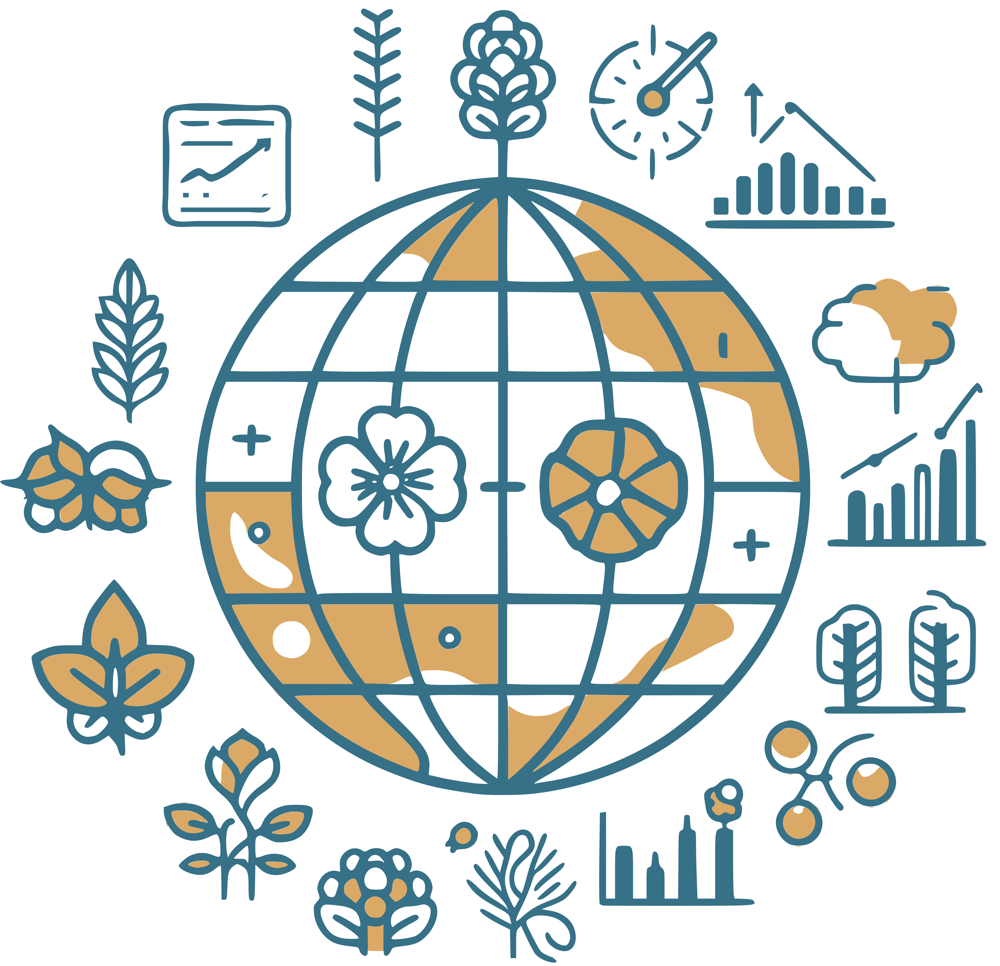

Looking for a new PhD student!
This position is closed. The page is retained for reference.
Exploring the Past, Shaping the Future: A full-time PhD position in Global Vegetation Biodiversity (Prague, 4 years, starting October 2024)
Are you passionate about unravelling the mysteries of our planet’s biodiversity using large data and statistics? I offer a fully funded, full-time PhD position in a field spanning macroecology, palaeoecology, biodiversity science, and quantitative ecology. The candidate will join my newly established Laboratory of Quantitative Ecology at the Department of Botany at the Faculty of Sciences, Charles University in Prague, Czech Republic.
The latest news about the position can be found on the website: https://bit.ly/PhD_HoloceneDiversityTrends
About the team
My lab is fascinated by macroecology, palaeoecology, and biodiversity science. I focus on exploring spatio-temporal patterns of vegetation biodiversity, with a commitment to interdisciplinary research and a focus on human impact.
Project in detail
Holocene Diversity Trends: Quantifying Global Vegetation Biodiversity Changes since the Last Glacial Maximum
This project aims to unveil macroecological patterns shaping global plant biodiversity, emphasizing the necessity of understanding past ecological dynamics for accurate forecasting. In the face of the ongoing biodiversity crisis, comprehending drivers influencing plant biodiversity over time becomes crucial for estimating the effects of human impacts on the environment.
The long-term perspective of vegetation history relies on data spanning millennia. Palaeoecological research, particularly fossil pollen records, serves as an exceptional source, offering detailed vegetation history over these extensive timescales. Despite existing regional studies on taxonomic diversity changes in past vegetation, a global multi-faceted synthesis is lacking, hindering a holistic understanding of long-term vegetation dynamics.
The PhD project will target this gap by using state-of-the-art public databases and a range of advanced numerical techniques, while strategically positioned within a global network of interdisciplinary collaborators. Leveraging cutting-edge advancements in quantitative palaeoecological methods, data science, and machine learning, the project will explore multiple facets of plant biodiversity (taxonomic, functional, and phylogenetic) spanning various spatial scales (biomes, subcontinental, continents, global), encompassing the period since the Last Glacial Maximum (last 21.000 yr).
By advancing comprehension of global biodiversity patterns and their historical drivers, this project contributes pivotal knowledge for predicting ecological responses to global change. The interdisciplinary nature of this project will further foster valuable outputs for macroecologists, palaeoecologists, archaeologists, global change ecologists, and ecoinformatics, among others.

I offer
- A fully funded, full-time PhD position
- Full medical insurance and social security
- Support for settling in a foreign culture and language environment
- Opportunity to acquire skills in:
- Data analysis and statistical testing
- Working with large dataset compilations from global databases
- Advanced coding protocols, particularly in R
- Tools to foster reproducibility in science (e.g., version control)
- Presentation and communication skills, with the opportunity to present at conferences, congresses and workshops
- A tax-free PhD stipend of 20,500 CZK/month (ca 830 EUR as of Jan 2024).
- I hope to be able to acquire additional funding during the PhD project
- Access to state-of-the-art scientific and computing equipment, software, journals, and scientific databases.
- Access to my worldwide network of collaborators with the possibility to participate in related projects
- Subsidized meals at the university canteen
- Work in an inspiring academic international environment (the working language is English)
- Working in the hearth of Prague city centre. Prague, renowned for its cultural richness, stands as one of the safest cities globally, with excellent public transport, international accessibility, and healthcare (read more about living in Prague)
I require
- A master’s or equivalent degree/diploma in a project-related field (e.g., ecology, geography, palaeoecology, botany, bioinformatics, biostatistics, environmental sciences). However, I also encourage holders of degrees in statistics, data science, or computer science to apply
- Proficiency in spoken and written English
- Motivation to learn new skills
- Enthusiasm for team building and collaboration
Desirable but not required:
- Prior experience with programming in R; experience with other languages (Python, C#, etc) are also welcomed
- Solid background in data analysis and statistical testing
- Experience from an international working environment
Applications
! Application deadline is 13th of March 2024 !
The application process has 2 stages:
- Your application needs to be submitted via STARS portal
The STARS is a framework to attract the best students from abroad, as well as from the Czech Republic, to ensure excellent education and an adequate income for PhD students. More info can be found on website
Send an email to ‘ondrej.mottl@natur.cuni.cz’ with “PhD application [your surename]” in the email subject, containing:
- Motivation letter (1-2 pages) describing your expertise and research interests, stating why you see yourself as a good fit for my group/team, and why are you interested in getting a PhD.
- Contact details for 2-3 academic referees, e.g. your former supervisor, boss, or collaborator.
Note that additional materials such as your theses, manuscripts, diplomas, or certificates may be requested later on, so make sure to prepare all relevant documents prior.